Кое-что из того, с чем я работал
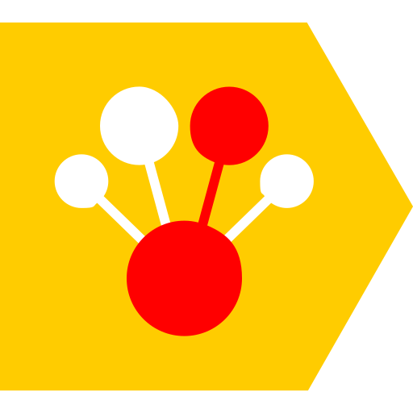
CatBoost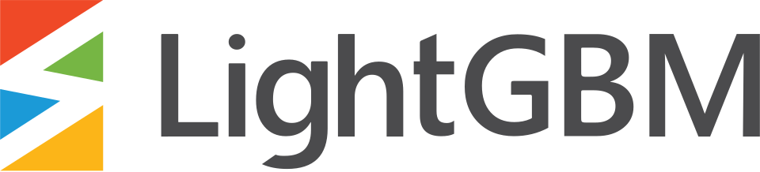
LightGBM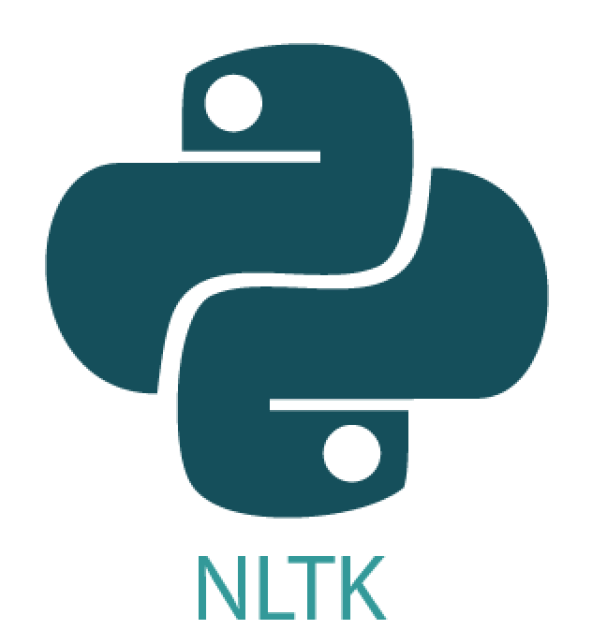
NLTK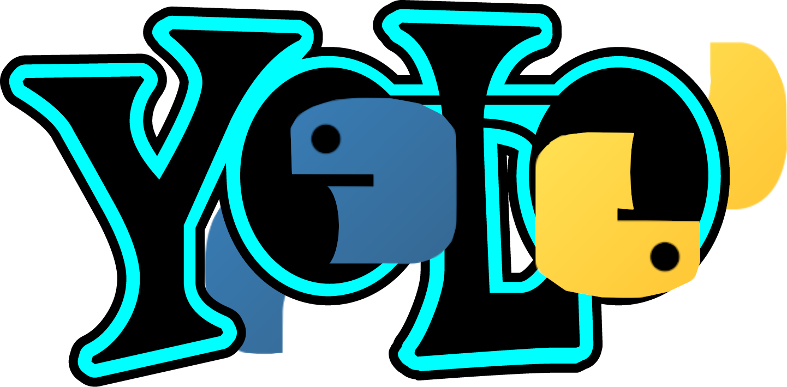
YOLO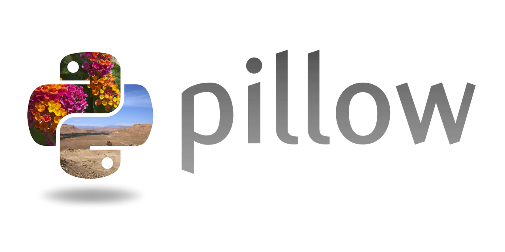
Pillow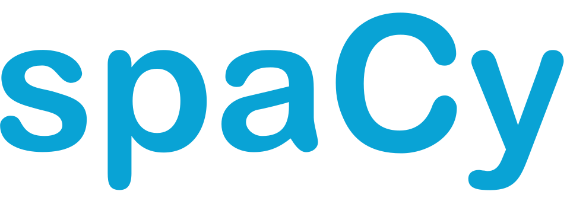
spaCy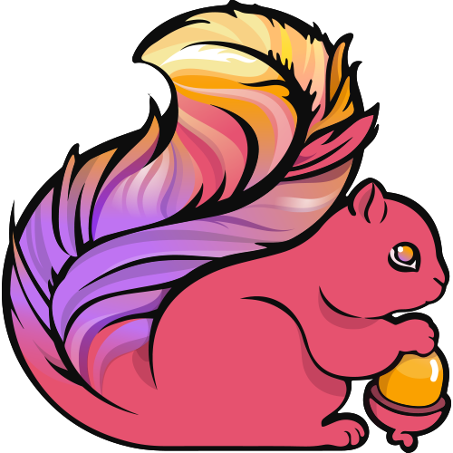
Apache Flink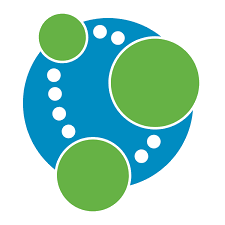
Neo4j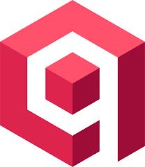
Qdrant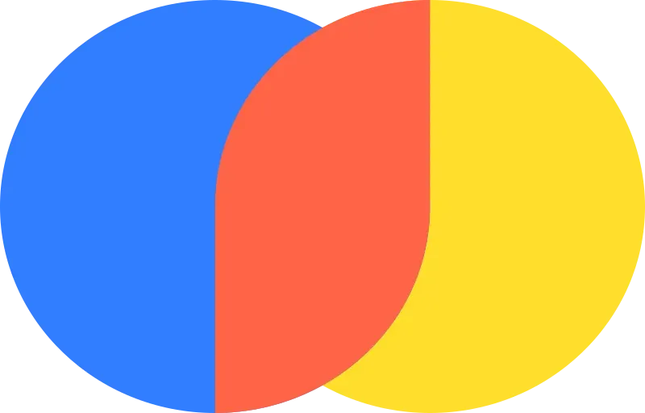
Chroma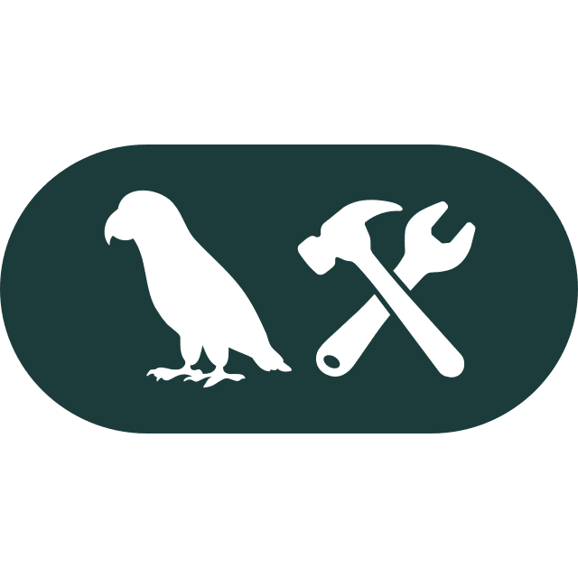
LangChain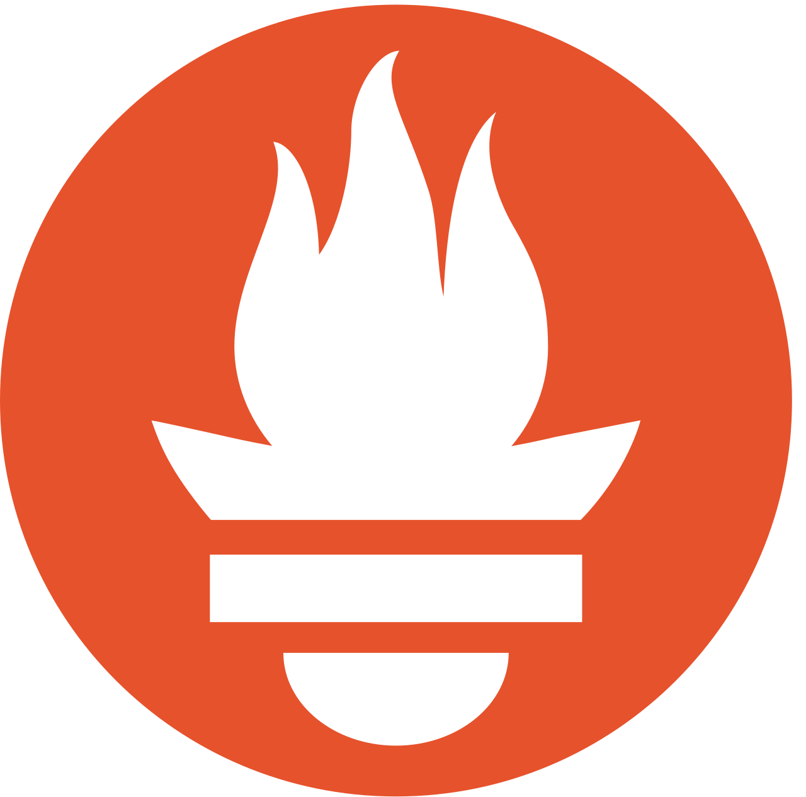
PrometheusПроекты
Практические разработки в области машинного обучения и компьютерного зрения
colreg-vision-node
Нода компьютерного зрения для автоматического определения навигационного статуса судов по МППСС-72 (COLREG) с использованием детекции знаков/огней и слияния данных сенсоров.
Описание проекта
Система разработана для повышения безопасности автономного и ассистируемого судоходства. Она автоматически распознает навигационный статус встречных судов в соответствии с МППСС-72. Алгоритм анализирует дневные сигнальные фигуры (шары, цилиндры, ромбы, конусы) или ночные огни (топовые, бортовые, кормовые, круговые).
Особое внимание уделено надежности: при ухудшении видимости (туман, ночь, осадки) система переключается на мультимодальный режим с использованием ИК-камеры, совмещая тепловизионные рамки с цветным оптическим каналом.
Результаты работы (Инференс)
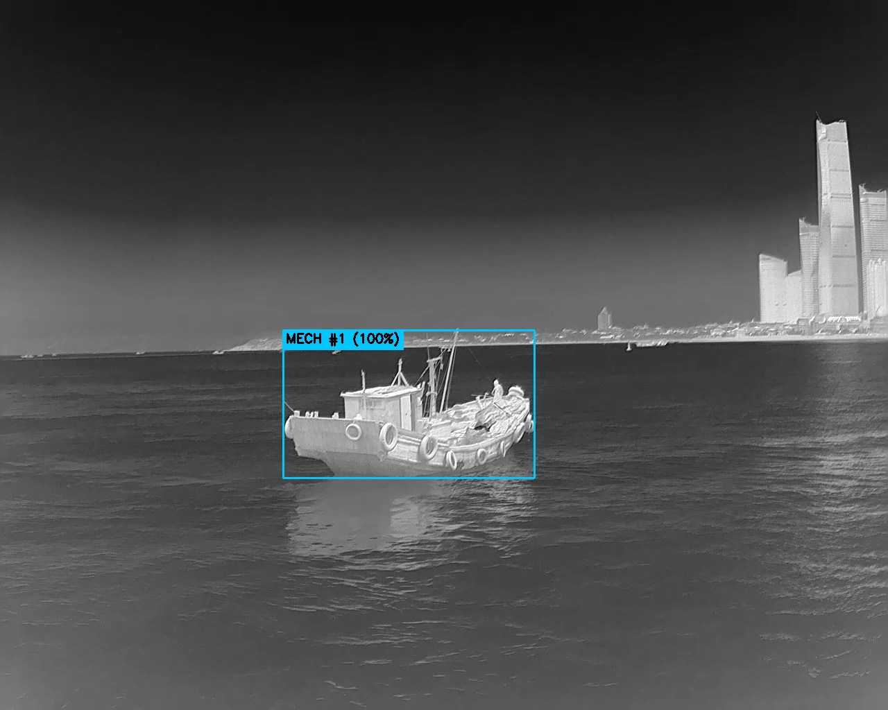
MECH #1 (100%) (судно с механическим двигателем на ходу).
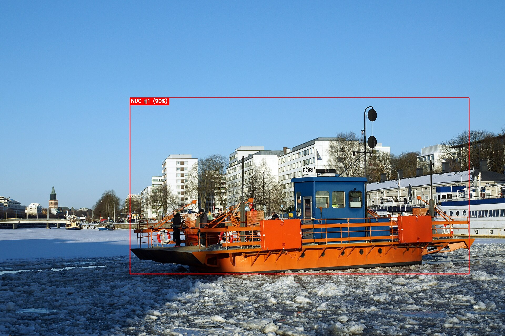
NUC #1 (90%) (Not Under Command). Модель распознала два черных шара на мачте.
Интерактивная схема
Наведите курсор на элементы схемы или кликните по ним, чтобы увидеть подробное описание каждого этапа работы пайплайна нейросетей.
Cellsistant
Интеллектуальный ИИ-ассистент, встроенный непосредственно в интерфейс JupyterLab, для автоматизации написания кода, анализа данных, визуализации и работы с файловой системой.
Описание проекта
Cellsistant превращает среду JupyterLab в интерактивную площадку под управлением ИИ-агента. Вместо простого генератора кода, расширение реализует полноценный цикл планирования и вызова инструментов (Tool Use / ReAct Loop).
Ассистент может самостоятельно создавать, редактировать и запускать ячейки ноутбука, анализировать полученные ошибки и графики с помощью зрения (Vision), искать информацию по коду, а также выполнять терминальные команды в безопасной песочнице с блокировкой деструктивных действий.
Демонстрация работы
.gif)
Интерактивная схема
Наведите курсор на элементы схемы или кликните по ним, чтобы увидеть подробное описание каждого этапа работы ИИ-агента в цикле ReAct.
VK Workspace Intelligent Search
Высокопроизводительная поисковая система для экосистемы VK Workspace, показавшая прирост Recall@50 и nDCG@50 на хакатоне за счет двухстадийного ранжирования и гибридного поиска.
Описание проекта
Решение представляет собой интеллектуальный поисковый движок на базе FastAPI и Qdrant, предназначенный для мгновенного нахождения нужных чатов, сообщений и вложений. Индексация использует скользящее окно с перекрытием для чанков и обогащает сообщения «семантическими якорями» (авторство, цитирование, вложенные файлы).
В основе поиска лежит ансамбль Alpha-Blending (4 параллельных потока поиска: семантический dense, лексический sparse main/opt и расширение через HyDE), объединяемый по схеме RRF Fusion в Qdrant. Финальное ранжирование выполняется кросс-энкодером Llama-Nemotron-Reranker-1B, эвристическим бустингом и NDCG Sharpener.
Интерактивная схема
Наведите курсор на элементы схемы или кликните по ним, чтобы увидеть подробное описание каждого этапа индексации и поиска сообщений.